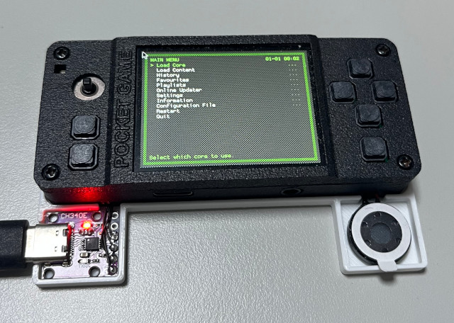

Steward
分享是一種喜悅、更是一種幸福
掌機 - Gaviar (小志掌機) - Build Retroarch
參考資訊：
https://github.com/libretro/RetroArch
$ cd
$ git clone https://github.com/libretro/RetroArch
$ cd RetroArch
$ export PATH=$PATH:/opt/gaviar/bin
$ export TARGETMACH=riscv64-linux
$ export BUILDMACH=i686-pc-linux-gnu
$ export CROSS=riscv64-linux
$ export CC=${CROSS}-gcc
$ export LD=${CROSS}-ld
$ export AS=${CROSS}-as
$ export CXX=${CROSS}-g++
$ rm -rf config.mk config.log config.h
$ PKG_CONF_PATH=/opt/gaviar/bin/pkg-config ./configure \
--disable-ffmpeg \
--disable-cg \
--disable-pulse \
--disable-jack \
--disable-x11 \
--disable-sdl2 \
--disable-egl \
--enable-sdl \
--disable-v4l2 \
--disable-wayland \
--disable-discord \
--disable-opengl1 \
--disable-videocore \
--disable-mali_fbdev \
--disable-opengl_core \
--build=riscv64-linux-
$ make -j4
需要修改的retroarch.cfg參數
audio_driver = "sdl" custom_viewport_height = "240" custom_viewport_width = "320" libretro_directory = "/boot/.config/retroarch/cores" libretro_info_path = "/boot/.config/retroarch/info/" microphone_driver = "" rgui_browser_directory = "~/" video_driver = "sdl" video_window_auto_height_max = "240" video_window_auto_width_max = "320" video_windowed_position_height = "240" video_windowed_position_width = "320"
完成
